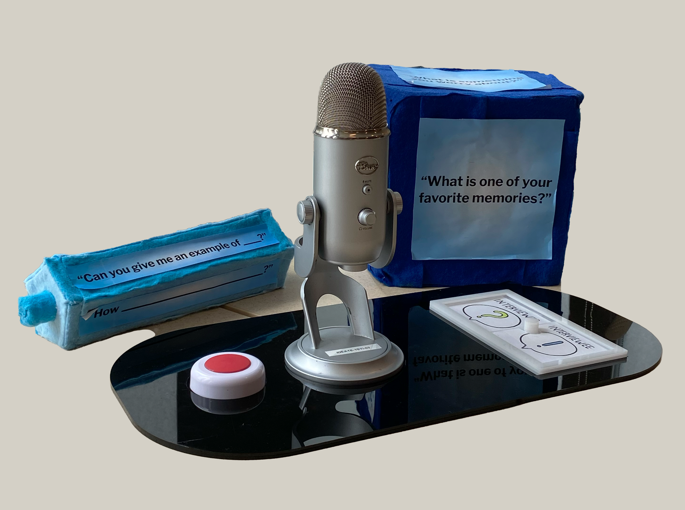
Interviewing You & Me!
A Socio-Emotional Learning Exhibit on Curiosity, Question-Asking, and Active Listening for the Children's Museum of Pittsburgh
Role
Experience + Interaction Designer
Physical + Digital Prototyping
User Research + Testing
Collaborators
Daphne Han
Emma Tong
Timeline
7 weeks
In this exhibit, children and caretakers interview each other, practicing active listening and question-asking in a professional interview setup. Interviewers can select from a variety of questions (or create their own) and engage with their partners to discover something new. Through a printed brief and guided reflection, visitors reflect on their interview questions and findings, leaving with newfound connection and genuine curiosity about one another.
Our team was tasked with developing an exhibit concept focusing on socio-emotional learning for the Children’s Museum of Pittsburgh (CMoP) that engages both children and adults in developing a socio-emotional skill area. Interviewing You & Me! is an exhibit with an interview set with real equipment, focusing on the following goals:
Socio-Emotional Learning Goals
- Visitors will exercise active listening skills, including paying attention, empathizing with the listener, not interrupting, and asking relevant, thoughtful questions.
- Visitors will practice asking relevant follow-up questions to uncover “gold nuggets,” deepening their understanding of their interview partner.
- Visitors will develop genuine curiosity in others, encouraging them to engage and meaningfully connect with each other.
Visitor Experience Goals
- Guide intentional conversations among family and friend groups that enable them to discover something new about the other person, realize there is more to learn, and feel more curious.
- Provide visitors the opportunity to practice active listening and asking follow-up questions in a personally relevant context.
- Create a fun, novel, and memorable experience for both children and adults.
Experience Overview
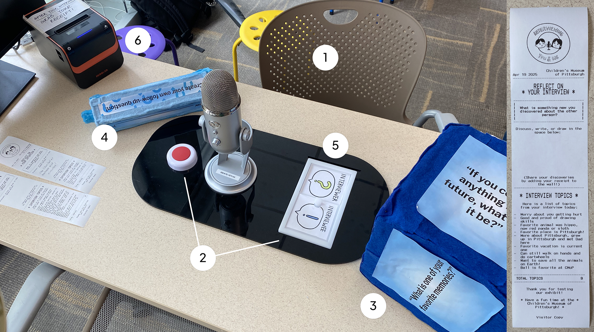
- Visitors sit down at seats.
- Press the button to start and end the interview, and use the slider to determine roles.
- Use the dice for a starter question.
- Use the prism to help with asking follow-up questions
- Use the slider to switch roles with your interview partner and repeat.
- Once the interview ends, grab the receipt from the receipt printer!
Learning and Design Research Synthesis
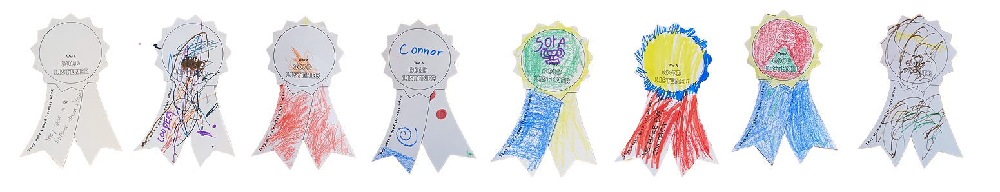
As an early probe, we conducted a conversational activity study at the Children's Museum of Pittsburgh that sought to uncover visitors' perceptions, beliefs, behaviors, and practices surrounding active listening.
The study highlighted the need for a facilitated divergence from obedience-oriented perspectives on listening. These insights shaped our team’s initial concepts.
We found that:
-
Listening is often equated with obedience.
Many families define "good listening" as following instructions rather than engaging in meaningful, active listening. -
Listening is hard to define.
Many visitors provided circular definitions, and children especially struggled to articulate what active listening means. This suggests they may not have explicit language or frameworks to differentiate between passive and engaged listening. -
Parents and children respond better to concrete examples.
This suggests that listening is more easily understood in specific situational contexts rather than as an abstract concept. -
Need for engaging, structured facilitation.
Visitors see value in experiences that are actively guided (live interaction, storytelling, and facilitated discussions) rather than passive or exploratory exhibits.
Initial Exhibit Concept Pitch
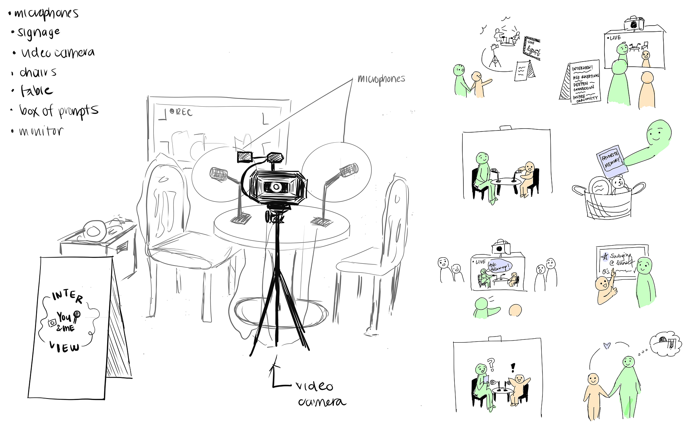
During an exhibit concept pitch session with HCI faculty and museum professionals, we received feedback on three initial exhibit concept ideas, one of which was Interviewing You & Me!. Motivations and inspirations for this concept came from:
- Facilitating Two-way Conversations: To diverge from the “listening is obedience” preconception that we found in our Conversational Activity Study, we shifted to facilitated two-way conversations where both parties are given the opportunity to share and listen.
- Personal Experiences with Documentary Filmmaking: Documentaries focus largely on interviews to draw out stories and insights. Interviewing is a skill that requires an immense amount of focus, patience, and empathy, all of which encompassed our initial active listening learning goals.
Takeaways
A few points came up from the reviewers that we sought to address in the first iteration of the concept:
- Framing the Intended Experience: Open-ended format risks visitors missing the intended takeaway. Need to focus on refining the prompting and scaffolding to produce meaningful conversations that highlight active listening and question-asking, without being overly prescriptive.
- Accessibility and Inclusivity: Design should account for different ages and differently-abled people, such as with cues in different modalities (visual, audio, object-based).
- Leveraging Video and Audio: Opportunities to enhance immersion and reinforce listening skills via replay, editing, and review features and smart interventions.
- Creating a Take-home Artifacts: Allow visitors to physically take back and save the experience (e.g. transcript, QR code video) to reinforce learning and engagement.
The Listening with Curiosity Project
Further research was conducted to develop our interview-based exhibit. The main source of inspiration was the Listening with Curiosity Project, developed by the Science of Human Connection Lab at NYU.
The following findings were key to our exhibit development:
- Transformative Interviewing: A structured interviewing approach to active listening that highlights the role of question-asking—particularly open-ended and follow-up questions—in fostering meaningful conversations (Way & Nelson, 2018).
- Curiosity as the Driver: This project identified interpersonal curiosity—the desire to know about another person's experiences, thoughts, and feelings—as the underlying driver of both question-asking and deep listening (Han et al., 2023).
- Structured Learning Process: This project trained middle school students to develop and refine their question-asking skills through an iterative process: instructors model engaged interviewing, students practice interviewing, and feedback is given and “gold nuggets” (responses with emotional depth and self-reflection) are evaluated (Way & Nelson, 2018).
- Socioemotional Benefits: They reported that the students had increased empathy, stronger connections with others, and greater confidence in forming relationships (Way & Nelson, 2018). Those who displayed greater curiosity about others were also perceived as better listeners (Nalani, 2024).
Takeaways
Our final exhibit concept built on the principles learned from The Listening with Curiosity Project:
- Reframe Social-emotional Learning (SEL) Topic: Curiosity, question-asking, and active listening are all one construct that informs connection. Instead of designing for the broad SEL topic of listening, we honed in our focus to active listening in the context of curiosity and question-asking.
- Structured Interviews as Exploration: Listening is best understood through practice and structure. We can design interviews to be a structured, interactive way to practice listening through curiosity-driven question-asking. By providing the opportunity for visitors to have facilitated yet open conversations, the exhibit helps shift the perception of listening from passive obedience to an active, exploratory process.
- Encouraging Intentional Curiosity: The use of question prompts and reflection moments ensures that both children and adults experience listening as an intentional act of curiosity and connection.
Prototyping, Testing, and Iteration
Prototype 1
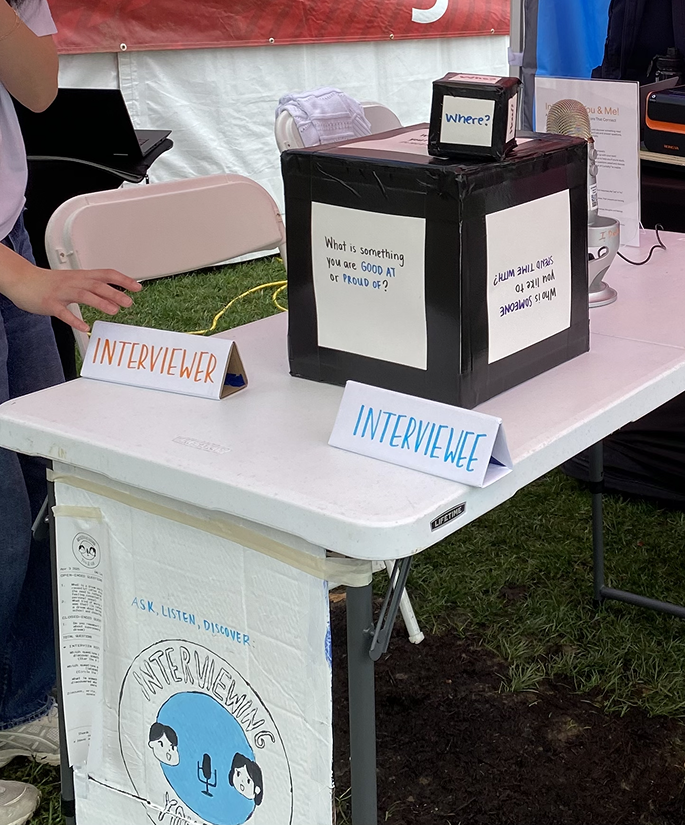
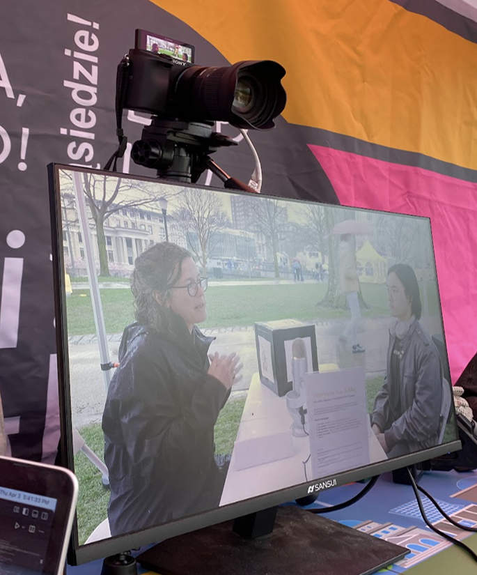
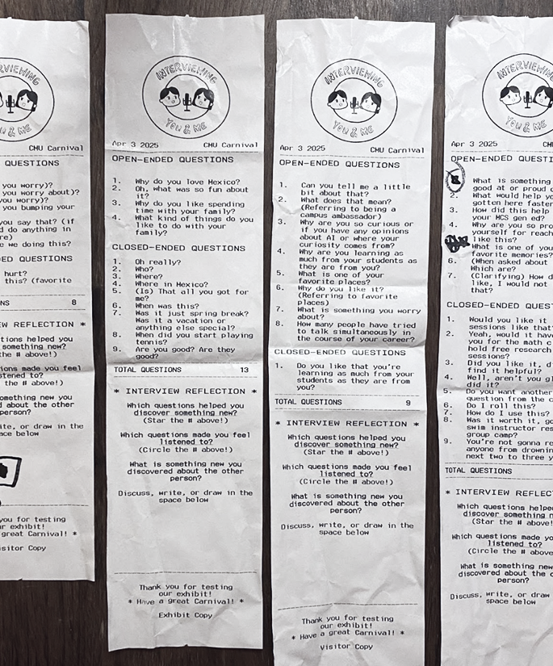
In this early version of Interviewing You & Me!, we designed an interview set for two visitors, ideally a child–adult pair or peers, to explore conversation. The setup invited participants to take turns interviewing each other using a physical prompt dice, while their conversation was recorded via microphone and displayed on a monitor for added attraction and engagement.
Key Elements
Interview Set
Two chairs, a table, a visible microphone, and a live video monitor aimed at the participants.
Big Prompt Dice
A large foam cube with six open-ended starter questions (e.g., “What is your favorite memory?”) to initiate the interview.
Smaller Follow-Up Dice
A smaller cube with question starters (“who,” “what,” “when,” “where,” “why,” “how”) to scaffold follow-up questions.
Interview Receipt
After the conversation, participants received a receipt listing the questions they asked, categorized as open- or closed-ended, as well as a few reflection prompts.Behind the scenes, we used an LLM (large language model) pipeline to transcribe, analyze, and classify the interview conversation. This enabled real-time generation of receipt content tailored to each session
Reflection Space
Visitors were encouraged to reflect silently or together using the prompts on their receipt, and ideally leave it on a shared “Wall of Curiosity.”
Prototype 1 Testing: CMU Carnival Tent
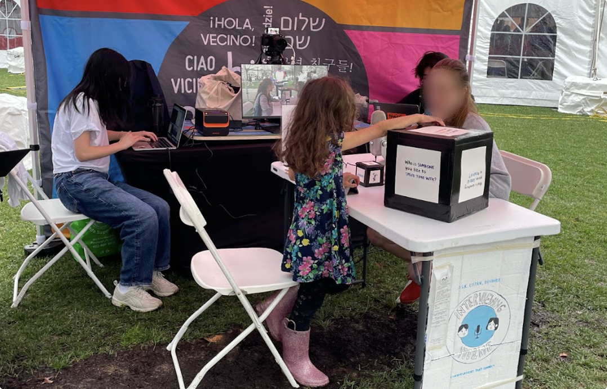
Evaluation Objectives
- Do the question cubes elicit meaningful conversation and help visitors come up with follow-up questions?
- Are visitors motivated to interact with the exhibit, and do they understand what they need to do during the experience (without help from a facilitator)?
- Do the post-interview reflection prompts help visitors reinforce what they learned/discovered, and does the categorization of open-ended and closed-ended questions tie into their reflection?
- Do visitors leave the exhibit experience with an increased curiosity about their exhibit partners?
Data Collection Methods
- Behavioral observations (flow, use of materials, engagement levels)
- Verbal observations (depth of conversations, use of follow-up questions, and how visitors discussed the reflection activity)
- Exit surveys (SEL reflections, usability feedback)
Findings and Design Implications
We tested this prototype during a public outdoor “Carnival” event. Over 90 minutes, we engaged 5 visitor pairs (4 adult pairs, 1 child-adult pair). Our findings directly informed several key design changes aimed at improving usability and socio-emotional learning:
- Support for Inquiry Without Prescriptiveness: The small follow-up dice were often misunderstood or ignored during testing. In response, we redesigned it as a pentagonal prism featuring scaffolded sentence starters (e.g., “Can you tell me more about ___?”) to better prompt elaboration without scripting the conversation.
- Reflection That Feels Natural: While the receipt artifact was well-received, visitors largely skipped or misunderstood the reflection prompts. We streamlined the reflection section to focus on a single open-ended question (“What is something new you discovered about the other person?”) and replaced the question type categorization with a bulleted list of discussed topics to prompt more intuitive reflection.
- Clearer Transitions and Role Swapping: Many visitors were unsure when or how to switch roles or end the interview. To address this, we added clearer interaction cues, including a light-up start/stop button and a physical slider that toggled between “interviewer” and “interviewee” roles.
- Encouraging Visitor-Generated Questions: Visitors who created their own questions often had deeper and more engaging conversations. To support this, we added a “wild card” face to the big prompt dice, inviting visitors to come up with their own question during the interview.
- Communal Curiosity and Shared Discovery: Although we couldn’t test the Wall of Curiosity during our Carnival session, visitors expressed strong interest in shared stories and experiences. This motivated us to prioritize the wall in our next iteration as a space for posting discoveries and sparking continued inquiry.
Prototype 2
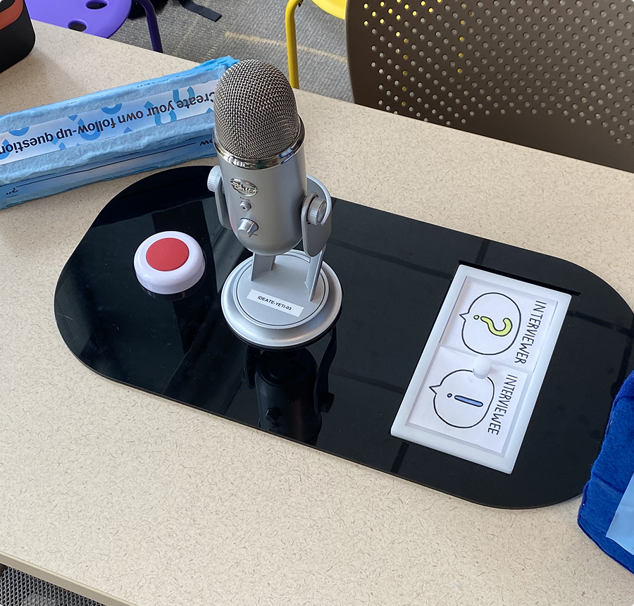
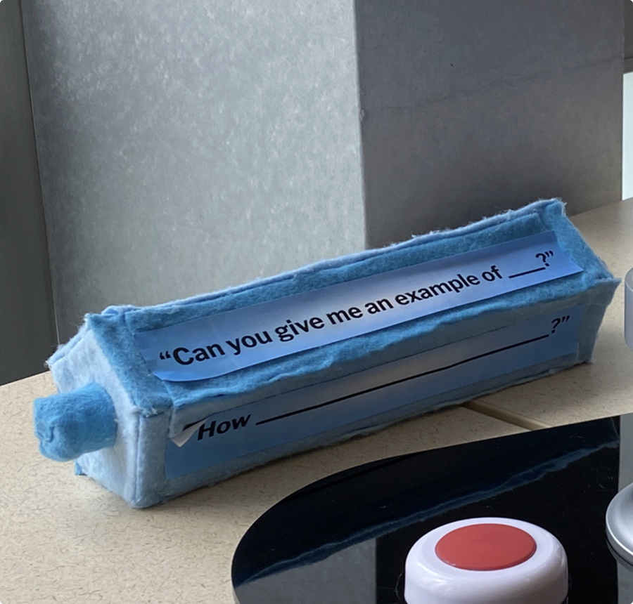
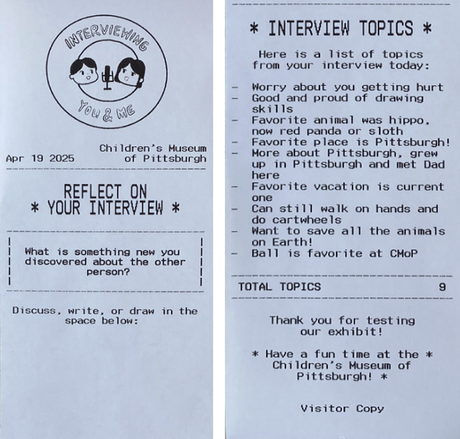
In this updated iteration of Interviewing You & Me!, we retained the immersive interview setup but refined several interaction elements to improve clarity, usability, and reflection. Visitors—especially child–adult pairs—could interview each other using improved physical tools and controls designed to scaffold deeper listening and inquiry.
New And/Or Altered Elements
Big Prompt Dice
A foam cube with revised questions, including a “wildcard” face for user-generated questions.
Follow-Up Prism
A redesigned five-sided prism with scaffolded sentence starters (e.g., “Why ___?”, “Can you give me an example of ___?”) to support deeper follow-up questions.
Interview Receipt
A facilitator-generated printed artifact listing general conversation topics and a single reflection prompt: “What is something new you discovered about the other person?”
Start/Stop Button
A light-up button at the center of the table that signaled the beginning and end of the interview session, helping structure the experience.
Role-Swapping Slider
A physical slider that flipped to display “interviewer” or “interviewee,” allowing visitors to assign roles and switch them midway through the interview.
Prototype 2 Testing: Children's Museum of Pittsburgh
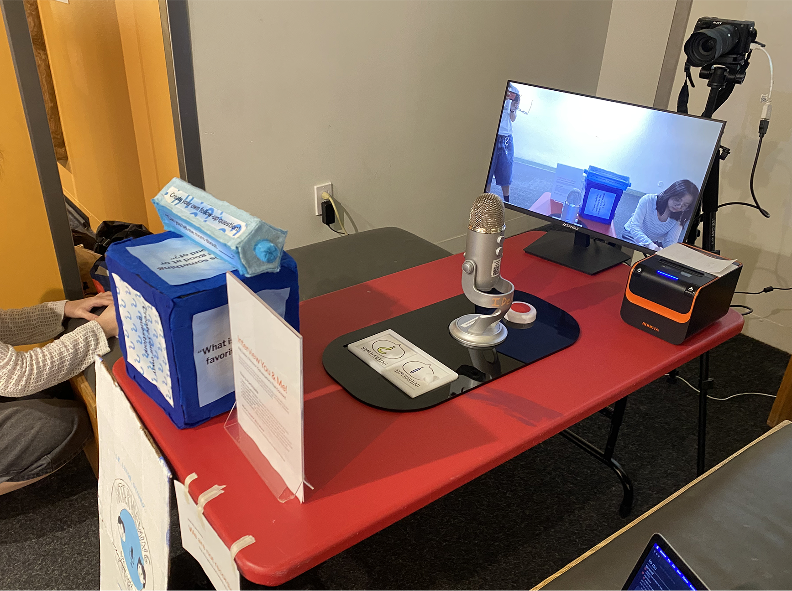
Evaluation Objectives
- Does the follow-up prism support relevant, open-ended questions?
- Are role swapping and interview closure intuitive and autonomous?
- Do visitors engage meaningfully with the receipt-based reflection and Wall of Curiosity?
- Do visitors report new discoveries and increased interpersonal curiosity?
Data Collection Methods
- Behavioral observation (role swapping, prism usage, interaction flow)
- Verbal/conversational observations (discussion patterns, follow-up depth)
- Mini VEP scale for reflection engagement
- Pre/post surveys measuring knowledge and curiosity changes
Findings and Design Implications
We conducted the evaluation on the museum floor with 5 child-adult or child-child pairs. Our findings and corresponding future design directions were the following:
- Follow-Up Prism Use: Only 2 out of 5 groups used the prism to ask follow-up questions. Others used it to generate new or unrelated questions, suggesting the function of the prism was unclear. If we were to further develop this exhibit, we would explore and test designs that disambiguate the purposes of the question cube and follow-up prism.
- Role Transitions and Flow Support: All 5 groups swapped roles during the interview. 3 groups used the physical slider, and 3 used the start/stop button to manage interview flow. These elements supported smoother transitions for most participants and will be retained in future iterations.
- Receipt Engagement and Reflection: All groups read their printed receipt. 4 out of 5 groups expressed visible joy or curiosity while reading it. However, none completed the reflection prompt, reinforcing findings from earlier testing that the written reflection may feel extraneous in the moment. We plan to remove this element in future iterations.
- Developed Curiosity and Discovery: Most participants discovered something new about their partner, including in close relationships. One participant returned later to repeat the activity with another family member. Groups that reported not discovering something new included two with younger children and one that role-played as strangers.
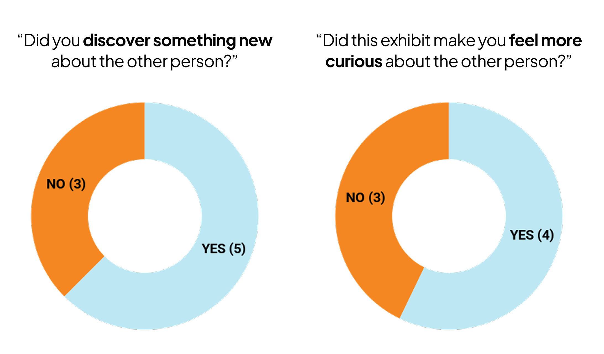
Team Reflection
What Worked
- Quickly defining a more granular SEL concept (active listening), which helped with developing more concrete exhibit ideas
- Strong research basis from “The Listening with Curiosity Project,” which strengthened credibility for our exhibit idea
- Quick to improvise when we were unable to record/use LLM workflow in the CMoP testing
- Small changes in design choices led to sizable usability improvements (button for start/stop, slider for role switching, etc.)
- Conversational activity takeaways tied into the final exhibit idea and allowed us to reframe our focus to question-asking/curiosity to better structure active listening
- Developed a lightweight LLM-powered workflow to transcribe and analyze interview conversations, automatically generating personalized receipts for visitors. While this feature couldn’t be tested during the museum session due to consent limitations, it functioned successfully in earlier trials and offered a promising direction for integrating AI into playful, reflective experiences for museums.
What Needs Work
- Lack of data and limited sample size weakened ability to draw strong conclusions
- Exhibit is heavily location/environment dependent, and setup during both Carnival and museum prototyping sessions affected sample size (rain, lack of outlets, transitional spaces)
- Lack of intentional and targeted accessibility iteration and testing
- Failed to observe more broad/holistic experiences and learnability due to observation structure, which led to our inability to catch certain usability issues and lack of iteration on core components of the exhibit (such as the dice)
Final Review Session Feedback
- Clarify Interaction Design: Reviewers noted that component functions—especially the dice—were not always clear. The prism was generally easier and more enjoyable to use, while the size and function of the big dice made it awkward during seated use. Clear labeling and affordance design will improve usability.
- Consider Visitor Disposition: The public-facing nature of the camera setup may be off-putting to introverted visitors or those uncomfortable seeing themselves on screen. Providing a more private or low-stimulation option could broaden appeal.
- Strong Initial Engagement: The tangible equipment and real-world interview setup attracted attention and made the experience feel playful yet meaningful. Reviewers appreciated the thoughtful concept, and described the questions as introspective and appropriate for a wide range of visitors.
- Emotional Resonance: The printed receipt was especially well received, with multiple reviewers commenting on the positive affect it generated—a small but memorable takeaway that deepened the experience.
Final Reflections and Design Opportunities
Based on feedback and observations, we identified several directions for improving the exhibit’s design, usability, and inclusivity. Placing the exhibit in a more secluded area could help minimize distractions, increase immersion, and better support visitors who prefer quieter, more private environments. To enhance accessibility, we recommended adding auditory question playback, which would benefit young learners, non-English readers, and visitors with visual impairments. For standalone use, we proposed clearer signage, intuitive instructions, and improved physical durability to withstand frequent interaction—alongside integrating real-time transcription to support receipt generation. We also saw the need to refine how prompts are delivered: testing new question formats, resizing the dice for better affordance, and potentially introducing digital elements to distinguish between starter and follow-up prompts. Finally, we suggested developing a facilitator guide and incorporating a visitor-generated content feature—such as a digital wall—to deepen post-exhibit reflection and foster social-emotional connections across experiences.